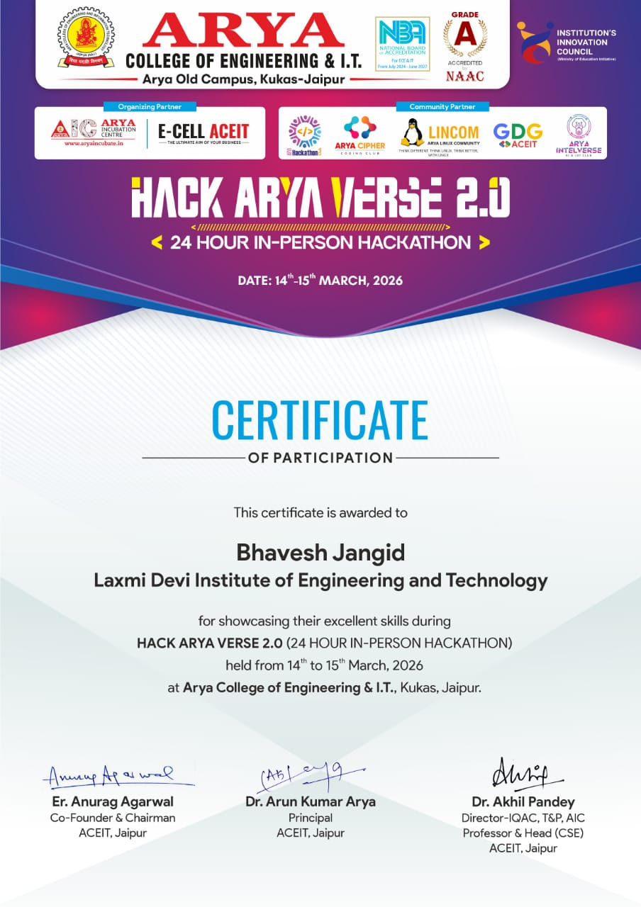

CODEALPHA
Python Programming Certificate
Successfully completed the Python Programming Certification offered by CodeAlpha. Gained hands-on experience in Python fundamentals, object-oriented programming, file handling, data structures, functions, and real-world project development.

UPFLAIRS
Web Development Internship Certificate
Successfully completed a 45-Day Web Development Internship at Upflairs in 2025. Worked on responsive website development using HTML, CSS, JavaScript, Bootstrap, and modern web design practices. Developed real-world projects and gained practical experience in frontend development.

UPFLAIRS
Data Science Internship Certificate
Successfully completed a 30-Day Data Science Internship at Upflairs in 2025. Worked on data analysis, data visualization, machine learning models, and real-world datasets using Python and industry-standard data science tools.

SANDEEP JAIMAN
Soft Skills Development Certificate
Successfully completed the Soft Skills Development Program under the guidance of Sandeep Jaiman in 2026. The training focused on communication skills, leadership, teamwork, personality development, problem-solving, and professional workplace behavior.

ARYA COLLEGE OF ENGINEERING & IT
Hack Arya Verse 2.0
Participated in Hack Arya Verse 2.0, a national-level hackathon organized by Arya College of Engineering & IT in March 2026. Collaborated with a team to develop innovative technology solutions, enhance problem-solving abilities, and gain hands-on experience in software development and project presentation.
View all credentials on LinkedIn or download my complete CV.